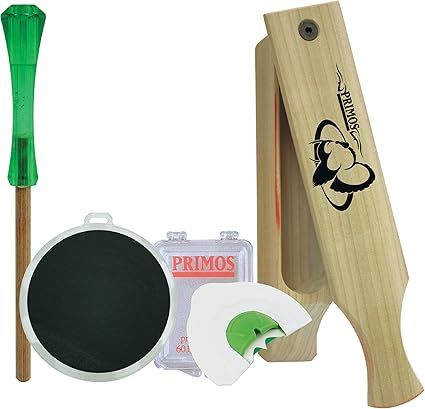
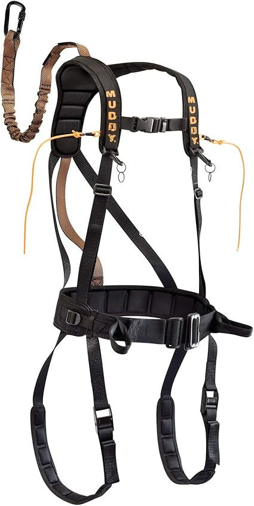
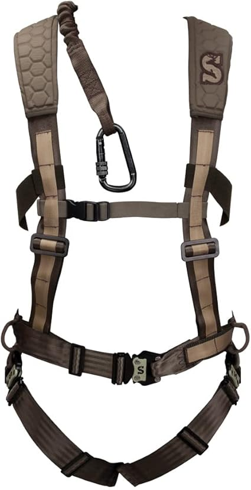

May 2026
Whether you're upgrading or buying your first, the right huntersafetyproducts in 2026 comes down to a few factors most buyers overlook.
Skipping negative reviews — A 4.5-star product with durability complaints tells you more than a 5-star product with 8 reviews.
Ignoring the fine print — Some huntersafetyproducts listings look great until you realize key parts are sold separately.
Overbuying features — Most people use 20% of high-end huntersafetyproducts features. Don't pay for what you'll never touch.
Trusting fake reviews — Look for reviews with photos and specific details. Generic praise is often planted.

#2 — Tree Strap Hunting Hunting Safety Harness Tree Strap Tree Stand Safety Stra — Best seller
#1 — Hunter Safety System Full Body Harness Tree Stand Safety — Editor's pick
#4 — TRSMIMA Safety Harness Fall Protection Roofing Full Body Construction Lanya — Highly reviewedThe best huntersafetyproducts is the one that fits your needs and budget. Our detailed comparisons on huntersafetyproducts.com make that call easier.